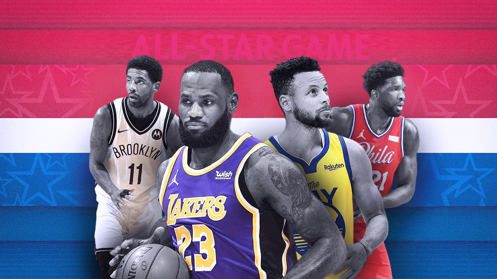
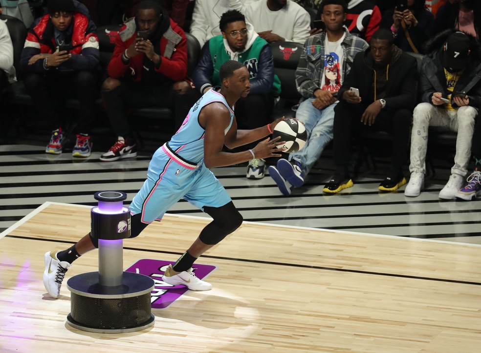
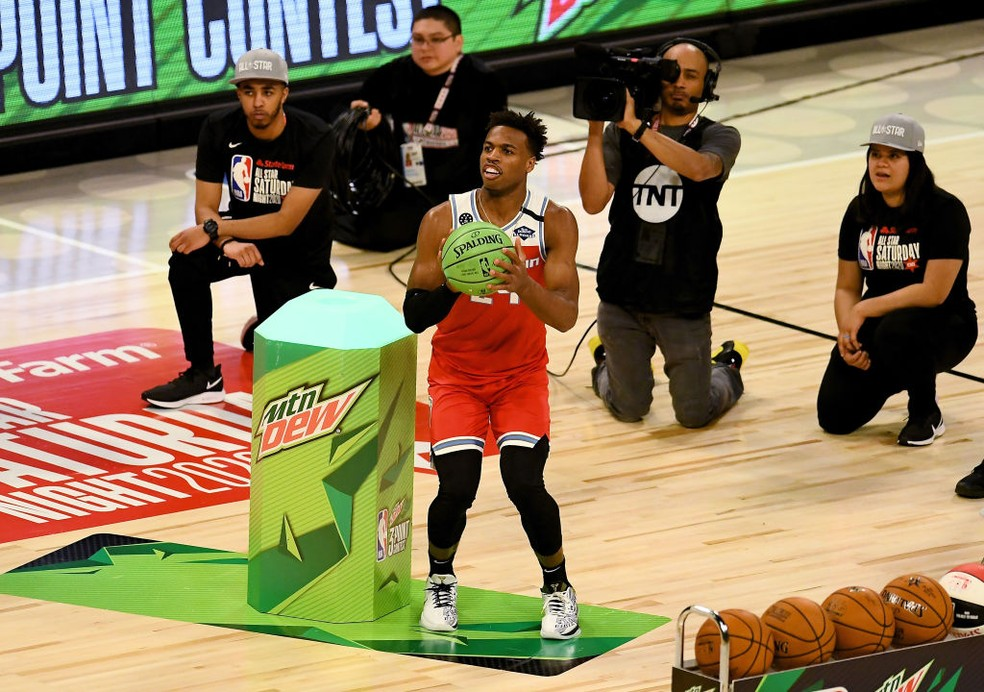
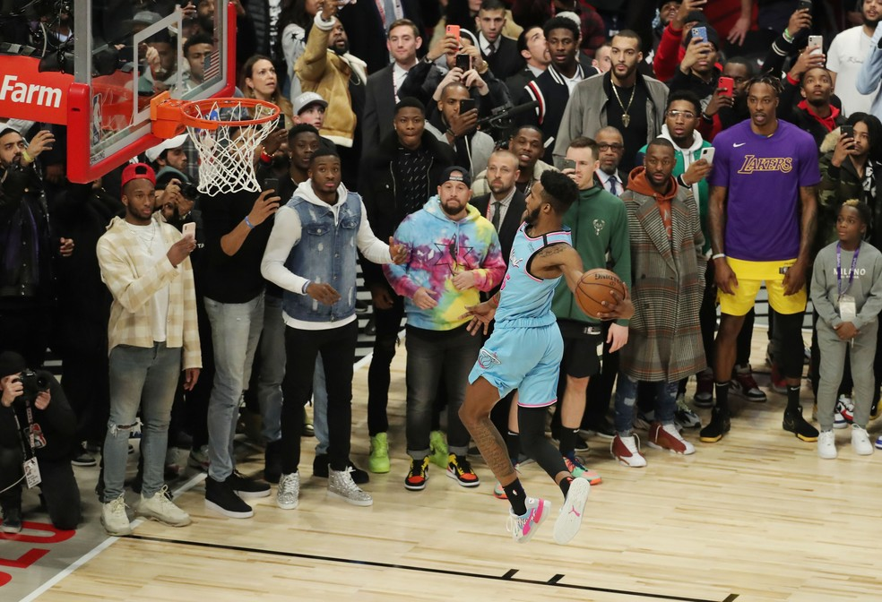
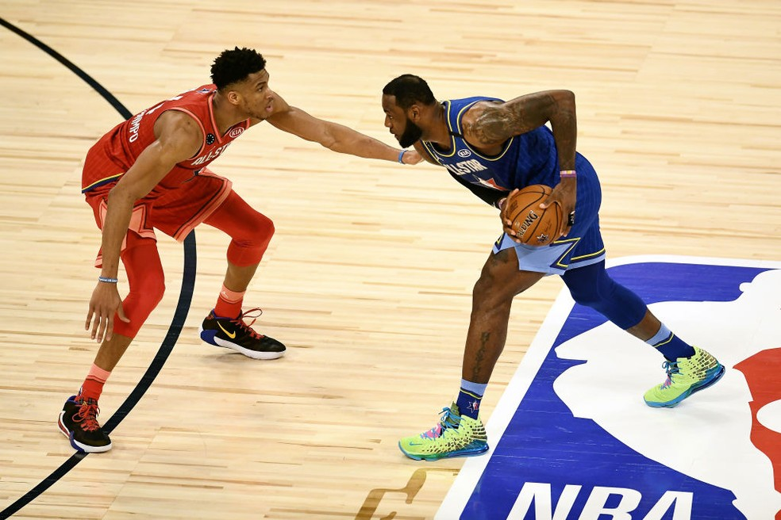

| Portal NBA | HOME | TEAMS | NEWS | GAMES | SOBRE | ||||||||||||||||||||
|
NBA NEWS
|
|||||||||
|  | |||||||||
|
NBA FAZ ALL-STAR REDUZIDO PELA PANDEMIA, MAS COM CRAQUES COMO LEBRON, CURRY E DONIC |
|||||||||
|
O final de semana do All-Star é sempre recheado de eventos e celebrações na NBA, mas em 2021
tudo será diferente, isso porque os eventos foram reduzidos graças à pandemia da Covid-19.
Em vez de três dias, tudo acontecerá neste domingo (07), a partir das 20h30.
|
|||||||||
|
Desafios de habilidades
Participantes: Robert Covington (POR), Luka Dončić (DAL), Chris Paul (PHX), Julius Randle (NYK), Domantas Sabonis (IND) e Nikola Vučević (ORL)

No evento que abre a noite, cinco dos seis participantes do desafio de habilidades
estarão presentes também no All-Star Game. Robert Covington, dos Trail Blazers, é a
única exceção à lista. Chris Paul fará a quinta participação na competição. Ele nunca
ganhou e não disputa desde 2011.
|
|||||||||
|
Torneio de 3 pontos
Participantes: Jaylen Brown (BOS), Mike Conley (UTA), Stephen Curry (GSW), Zach LaVine (CHI), Donovan Mitchell (UTA) e Jayson Tatum (BOS).

O torneio de 3 pontos promete disputa acirrada e recheada de estrelas. Pela primeira vez na
história, a competição terá apenas jogadores selecionados para o All-Star Game. Além disso,
um antigo campeões tentam a taça pela segunda vez (Curry).
|
|||||||||
|
Desafio de enterradas
Participantes: Anfernee Simons (POR), Cassius Stanley (IND) e Obi Toppin (NYK).

O grande evento do final de semana do All-Star estará em versão reduzida em 2021. Por conta
da pandemia da Covid-19, apenas três jogadores participarão da disputa, que acontecerá no
intervalo da partida entre o time LeBron e o time Durant.
|
|||||||||
|
All-Star Game
Time LeBron: LeBron James (LAL)*, Giannis Antetokounmpo (MIL)*, Stephen Curry (GSW)*,
Luka Doncic (DAL)*, Nikola Jokic (DEN)*; Damian Lillard (POR), Ben Simmons (PHI)***, Chris
Paul (PHX), Jaylen Brown (BOS), Paul George (LAC), Domantas Sabonis (IND), Rudy Gobert
(UTA).

Assim como em 2020, o All-Star Game terá um formato diferente de disputa. Os times vão se
enfrentar para vencer cada um dos três primeiros quartos, quem ganhar cada um deles
conquista uma doação para uma instituição de caridade.
|
|||||||||
| Referência: https://globoesporte.globo.com/basquete/nba/noticia/nba-faz-all-star-reduzido-pela-pandemia-mas-com-craques-como-lebron-curry-e-doncic.ghtml | |||||||||